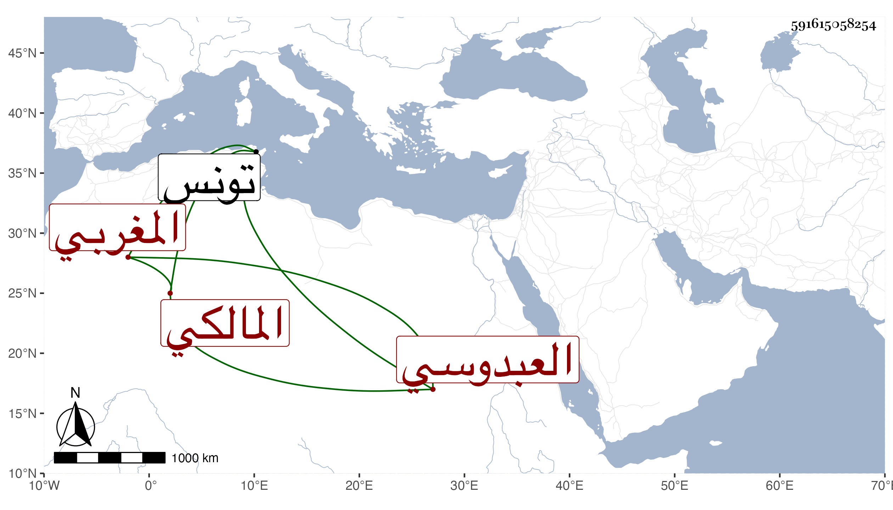

0902Sakhawi.DawLamic.ITO20230111-ara1.EIS1600.591615058254
Biography ID: 591615058254
458
أبو القسم بن موسى بن محمد بن موسى العبدوسي المغربي نزيل تونس المالكي . كان واسع الباع في الحفظ والرواية مع عدم عربية وممن لقيه ابن يونس بل قيل إن ممن أخذ عنه أبو المواهب بن زغدان مات سنة سبع وثلاثين قبل أبي فارس بيسير وقد أجاز لولد شيخنا وغيره من المتأخرين في سنة عشرين وذكره شيخنا في معجمه .
